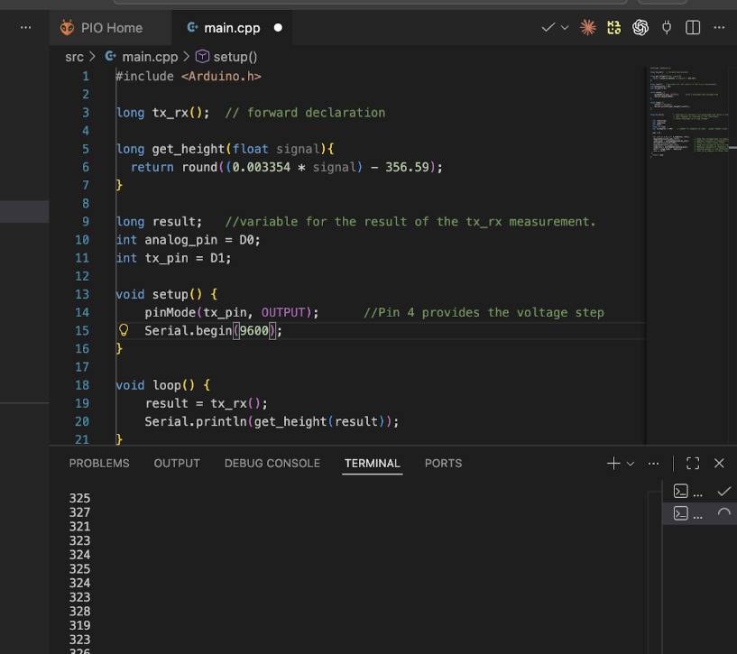
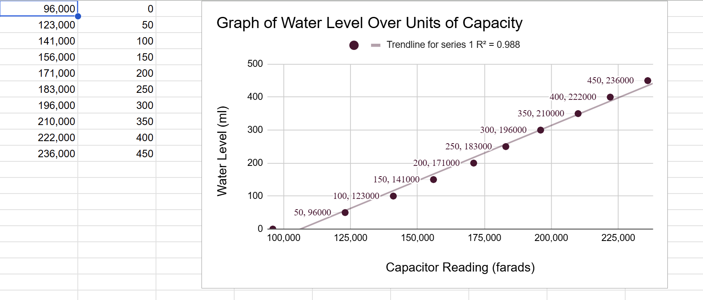
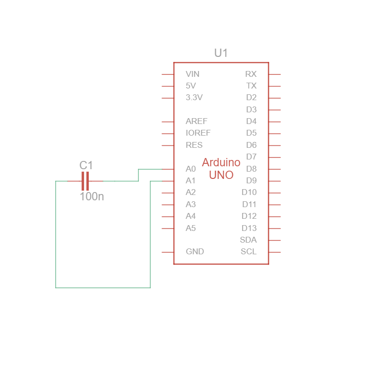
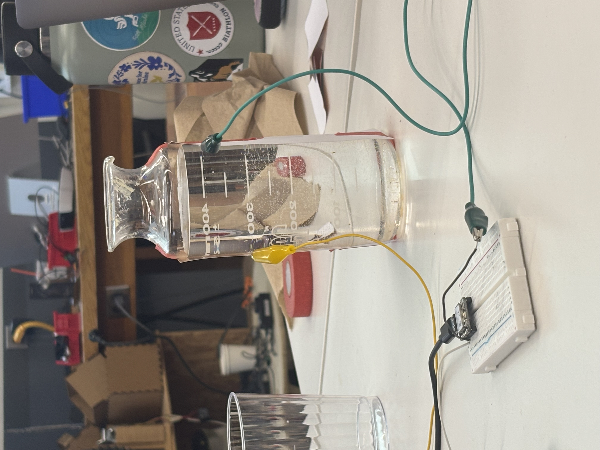
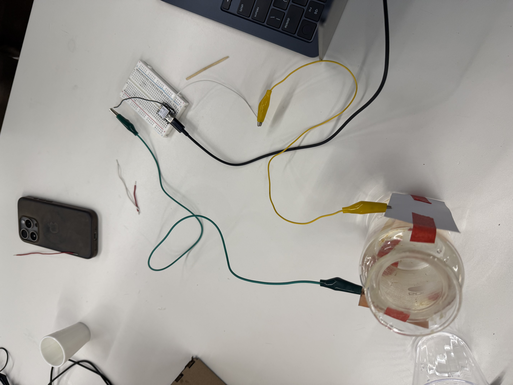
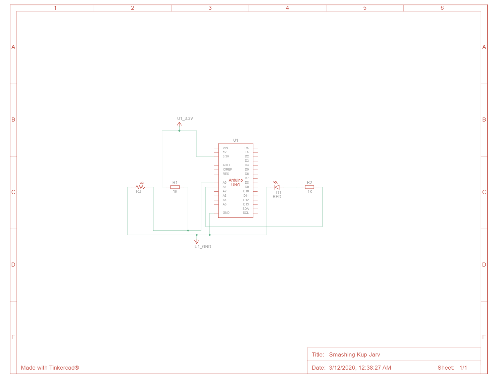
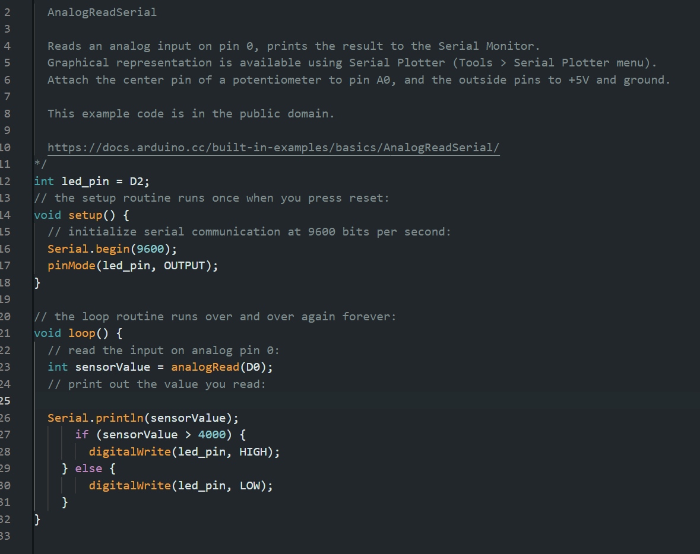
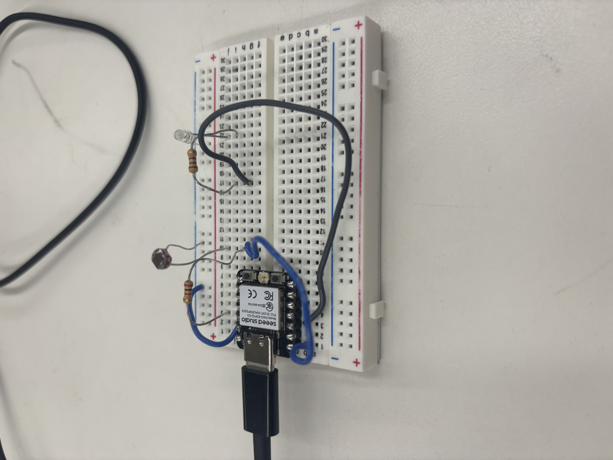

<div class="textcontainer">
<p class="margin"> </p>
<h3>Week 6: Electronic Inputs</h3>
<h4>Assignment 1: Capactive Sensor<h4>
For the capacitive sensor, we made a water level detector. We set the two copper plates on either side of the water.
We had code to measure the capacitance and took the capacitance at different water levels to find a line of best fit.
<p></p>
</div>
We found a linear relationship and modeled it. Our sensor could accurately predict the water level based on the capacitance so it was very cool.
<p></p>
The circuit was very simple to make as well
<p></p>
</div>
Here is what the setup looked like
<p></p>
<p></p>
<h4>Assignment 2: [Use + Calibrate Another Sensor]</h4>
I wanted to make a light that turns on when it was dark. The circuit was relatively simple to set up, except that I didn't know to attach a resistor to the light sensor.
Bobby came and saved me and then I had a perfectly working ciruit. The code was also very similar to that of the capacitor, just with a if else condition in the loop. So it would turn on if it was dark.
Here is the code, the circuit, and a picture of it.
<p></p>
<p></p>
<p></p>
</div>